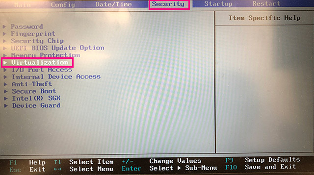
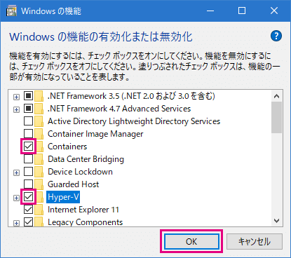
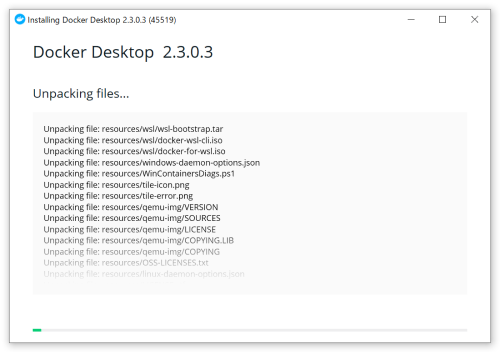
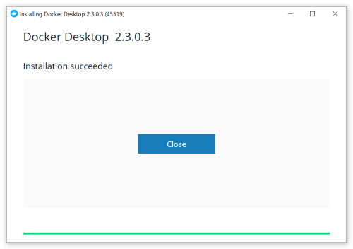
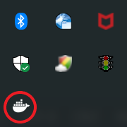
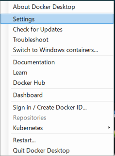

下記要件を満たしていることが前提となります。
公式サイト ↓ からインストーラをダウンロードします。
https://hub.docker.com/editions/community/docker-ce-desktop-windows/
ダウンロード済みファイル：50_ETC\soft\Docker Desktop Installer.exe
タスクマネージャ＞パフォーマンス のタブを開き、右下部分の 「仮想化」 が有効になっているか確認します。
有効になっていない場合は、BIOSの設定が必要です。
有効になっている場合は、Hyper-Vとcontainerの有効化 に進んでください。

Dockerを利用する環境を設定します。
Windowsを再起動し、再起動中にPCのメーカーのロゴが表示されるかと思いますが、それが表示されている間にBIOS画面に入ります。メーカーによって入り方は異なりますが、「F1」、「F2」、「Del」などのキーを押すことでBIOS画面に入れますが、入れない場合は「メーカー名 bios 入り方」などで調べてみてください。
BIOS画面はメーカーによって異なりますが、Virtualizationのメニューを探します。

Intel Virtualization Technologyを「Enabled」に変更して「F10」で保存します。

Hyper-VとContainerの有効化を行います。
Windowsメニューから 「設定」 を開いて、 「アプリ」 を選択します。

下にスクロールして 「関連設定＞プログラムと編集」 を選択します。

「Windowsの機能の有効化または無効化」 を選択します。

この画面が表示されるので 「Hyper-V」 と 「Container」 にチェックを入れて「OK」をクリックします。

Docker Desktop Installer.exe をダブルクリックするとインストールが始まります。

「Close」 ボタンをクリックしてインストールを完了します。

デスクトップに作成された 「Docker Desktop」 アイコンを選択し、右ボタン押下で 「管理者として実行」 を選択します。
インジケーターにアイコンが表示され、アニメーションが終われば起動完了です。

アイコンを右クリックしメニュー表示し 「Setting」 を選択し設定画面を開きます。

Dockerはメモリを大量に消費するので、普段は起動しないように 「Start ...」 のチェックは外しておきます。